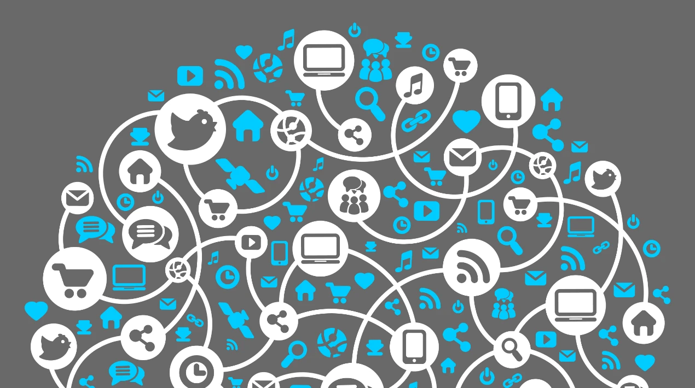
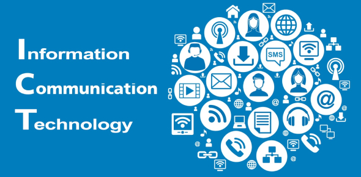

Cosa rappresenta l’Information e Communication Technology (ICT) oggi, nelle aziende e, soprattutto, nella nostra vita di tutti i giorni? Un buon modo per rispondere a questa domanda è analizzare una “normale” giornata della nostra vita.
 La sveglia che ci desta è, molto probabilmente, data da una app entro un cellulare o un tablet che è, sostanzialmente, un computer. Mentre in auto ci spostiamo verso il luogo di lavoro siamo guidati da un navigatore, molto probabilmente connesso ad Internet o anche esso realizzato da una app entro un cellulare o tablet. L’auto su cui ci muoviamo è un concentrato di elettronica, probabilmente ospita un sistema di informazione ed intrattenimento (infotainment) attraverso cui riceviamo informazioni sul mondo. Se ci spostiamo su un mezzo pubblico come un autobus o un treno, la pianificazione degli orari di questo è ottenuta attraverso sistemi informatici. In alcuni casi, come per esempio la linea 5 della metropolitana milanese, il mezzo stesso è guidato da computer. Magari durante il tragitto osserviamo comunicazioni dirette al nostro profilo Facebook o di un altro social network, grazie ad una complessa infrastruttura ICT che gestisce le piattaforme social e le comunicazioni verso il nostro cellulare/tablet. Giungiamo nel nostro luogo di lavoro e – qualunque esso sia – abbiamo a che fare con dei computer e il software in essi operante. Se abbiamo bisogno di cercare qualcosa accediamo a enormi banche dati su Internet, dove è concentrato l’intero scibile umano. Le comunicazioni di lavoro con clienti, fornitori e anche con nostri colleghi che, magari, lavorano in una sede estera della nostra azienda e non abbiamo mai incontrato di persona, sono principalmente basate sulla posta elettronica. Anche molte delle nostre attività professionali sono realizzate attraverso sistemi informatici, per esempio la registrazione della fattura di un fornitore o la verifica della pratica di un cliente. Se la nostra è un’azienda manifatturiera, buona parte delle operazioni nei reparti di produzione sono pianificate e realizzate da sistemi di automazione industriale controllati da computer. La logistica di approvvigionamento e trasporto dei prodotti finiti è pianificata attraverso sistemi informatici. I camion che trasportano le merci sono controllati tramite sensori connessi ai satelliti. Se dobbiamo pianificare un viaggio scegliamo e prenotiamo alberghi e mezzi di trasporto, e spesso scegliamo anche dove andare, tramite Internet. Possiamo poi andare in un centro sportivo e, mentre usiamo un attrezzo, possiamo controllare il nostro stato di forma fisica attraverso uno smart watch o un altro strumento simile. I dati raccolti sono un utile ausilio per controllare il nostro stato di salute. Durante ogni visita medica sarà usato uno strumento elettromedicale come ad esempio un ecografo, che esporterà i nostri dati clinici in un formato digitale. Queste stesse informazioni saranno disponibili presso una banca dati medica e accessibili tramite Internet. Ma non finisce qui… Accanto agli interventi “diretti” di così tanti strumenti ICT nella nostra vita quotidiana, esistono anche tanti altri indiretti, non meno importanti. Il nostro stesso modo di vivere è infatti basato su grandi reti infrastrutturali che trasportano l’energia elettrica, l’acqua, il gas… Accanto ad esse ci sono le infrastrutture di trasporto (strade, ferrovie, porti ed aeroporti), le già citate infrastrutture sanitarie, di pubblica sicurezza, della pubblica amministrazione, ecc… Tutte queste infrastrutture sono, più o meno direttamente, controllate attraverso grandi sistemi informatici. In conclusione possiamo affermare che, oggi, è l’ICT a fare funzionare tutto il nostro mondo e a rendere possibile il nostro modo di vivere.
 Si definisce sistema informativo un insieme di persone, procedure, prodotti tecnologici che ha il compito di raccogliere, archiviare, gestire e rendere disponibili le informazioni e i servizi che esse abilitano entro un’azienda, una pubblica amministrazione o anche tutta una nazione
Quindi, partendo ciò che lo standard ITIL definisce per l’interno delle aziende, possiamo affermare che, dietro ad uno qualsiasi dei servizi sopra indicati che compaiono nella nostra vita quotidiana, ci sono almeno 4 componenti: 1. La tecnologia stessa, ossia i prodotti tecnologici, ulteriormente suddivisibili in varie categorie, come i terminali finali (cellulari, smartphone, tablet, PC…), componenti server, software, infrastrutture di rete etc. 2. Le persone che producono l’hardware, quelle che lo installano/vendono, quelle che realizzano il software, quelle che gestiscono i sistemi e li fanno funzionare etc. 3. Le procedure, le leggi ed i regolamenti che governano (o dovrebbero governare) il funzionamento dei servizi esistenti e la pianificazione di servizi futuri. 4. Le relazioni e le partnership fra le varie entità giuridiche la cui collaborazione rende possibili i servizi per l’utente finale, ad esempio i fornitori di servizi di connettività ad Internet (Telecom Italia, Vodafone, 3, Fastweb…), i fornitori di servizi Internet (Google, Facebook, Trivago…), i fornitori di terminali (Apple, Samsung, HP, Dell…), i fornitori di software (Microsoft, IBM, SAP…) etc.